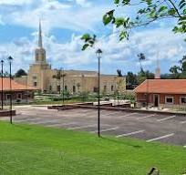
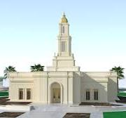
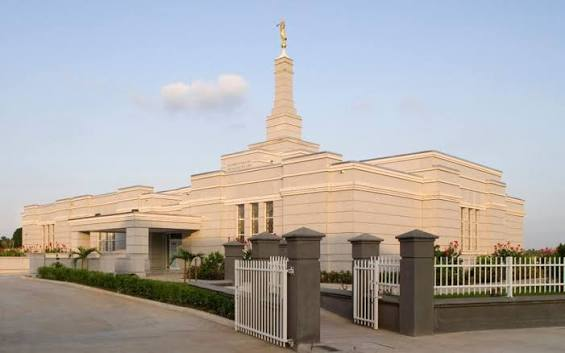

Temple Album
Accra Ghana Temple
Abuja Nigeria Temple
Aba Nigeria Temple

Lagos Nigeria Temple

Durban South Africa Temple

Johannesburg South Africa Temple
Cape Town South Africa Temple
Kinshasa Democratic Republic of the Congo Temple
Harare Zimbabwe Temple